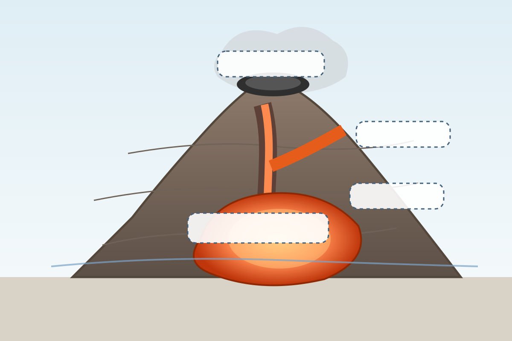
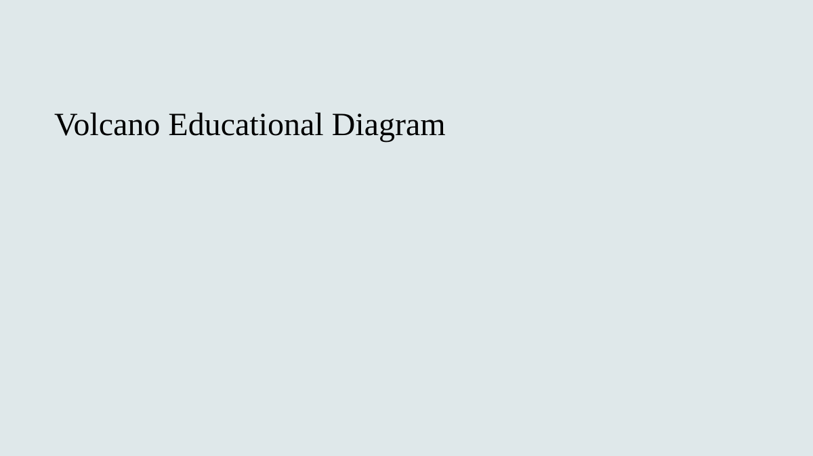

Welcome
Forecasts express changing probabilities rather than exact predictions.
Chapter 1: Volcano Systems

Learning Question: What is happening beneath a volcano?
Introduction
When many people think of a volcano, they imagine lava erupting from a mountain. However, an eruption is only the visible part of a much larger system. Most volcanic processes occur beneath the Earth's surface and cannot be seen directly.
Scientists therefore face a challenge. They cannot simply look underground and watch magma move. Instead, they must use evidence collected from monitoring instruments to understand what may be happening inside a volcano.
What Is a Volcano?
A volcano is an opening in the Earth's crust through which magma, gases, ash and other volcanic materials can reach the surface.
Volcanoes are not constantly erupting. Many remain quiet for long periods of time. During these quiet periods, important changes may still be taking place underground.
Main Components of a Volcano
- Magma Chamber – an underground reservoir where molten rock accumulates.
- Conduit – a pathway that allows magma to move upward.
- Vent – an opening through which volcanic materials may reach the surface.
- Crater – a depression often located at the summit of a volcano.
- Lava Flow – magma that has reached the Earth's surface.
Volcanoes as Connected Systems
A volcano is more than a collection of individual parts. Magma, heat, gases, pressure and rock continuously interact.
For example, rising magma may increase underground pressure. That pressure can fracture surrounding rocks, produce earthquakes, release gases and deform the ground surface.
Because these processes are linked together, scientists rarely rely on only one observation.
Why Scientists Cannot See Directly Underground
Most volcanic activity happens several kilometres beneath the surface. Drilling into a volcanic system is difficult, expensive and often dangerous.
Instead, scientists monitor clues that reveal what may be happening underground.
- Earthquakes
- Ground deformation
- Temperature changes
- Gas emissions
- Satellite observations
Observations, Interpretations and Forecasts
These three ideas are central to volcano forecasting.
Observation: Something scientists measure directly, such as an increase in earthquakes.
Interpretation: An explanation for what the observation might mean.
Forecast: An estimate of possible future activity.
Forecasts are based on evidence, but they always include uncertainty.
Why Forecasting Is Challenging
Many eruptions are preceded by warning signs, but warning signs do not always lead to eruptions.
A volcano may experience increased earthquakes, inflation or gas emissions without erupting. Because of this uncertainty, scientists combine multiple observations and continually update their assessments.
Common Misconception
❌ Scientists can directly see magma moving underground.
✅ Most volcanic processes occur below the surface and must be inferred from monitoring evidence.
Key Terms
- Magma Chamber
- Conduit
- Vent
- Crater
- Lava
- Observation
- Interpretation
- Forecast
Chapter Summary
- Volcanoes are complex systems involving magma, gases, heat and rock.
- Most volcanic processes occur underground.
- Scientists rely on monitoring signals to investigate subsurface activity.
- Observations are different from interpretations and forecasts.
- Forecasting requires combining multiple sources of evidence.
Understanding the volcano system is the first step toward understanding how scientists forecast eruptions.
Game: Volcano Explorer
Drag each label to the correct location on the volcano.

Chapter 2: Monitoring Volcanoes

Learning Question: How do scientists observe activity occurring deep beneath a volcano?
Introduction
Most volcanic activity happens underground where it cannot be observed directly. Because scientists cannot see magma moving beneath the surface, they rely on monitoring systems that detect signals produced by volcanic processes.
Modern volcano observatories operate networks of instruments that continuously collect information. These observations help scientists identify changes, assess possible hazards, and improve eruption forecasts.
Key Concept
Volcano forecasting depends on monitoring multiple signals rather than relying on a single source of information.
Why Monitoring Is Important
A volcano may appear quiet on the surface while important changes are taking place underground. Rising magma can increase pressure, release gases, deform the ground, and trigger earthquakes before any eruption occurs.
Monitoring allows scientists to detect these changes and determine whether volcanic activity is increasing, decreasing, or remaining stable.
Temperature Monitoring
Heat is one of the most obvious signals associated with volcanic activity. Rising magma can heat rocks, groundwater, and surface areas around a volcano.
Scientists use:
- Thermal cameras
- Satellite thermal sensors
- Ground temperature stations
Temperature changes may indicate increased volcanic activity, but warming alone does not necessarily mean an eruption will occur.
Ground Deformation Monitoring
As magma accumulates underground, it may push surrounding rocks outward. This can cause the surface of a volcano to rise, tilt or expand.
Scientists monitor deformation using:
- GPS stations
- Tiltmeters
- Satellite radar (InSAR)
Even small ground movements of only a few millimetres can provide important clues about subsurface processes.
Gas Monitoring
Volcanic gases are released from magma as pressure changes underground.
Common gases include:
- Water vapour (H₂O)
- Carbon dioxide (CO₂)
- Sulfur dioxide (SO₂)
An increase in gas emissions may indicate that magma is moving closer to the surface.
However, gas emissions can vary naturally, so scientists interpret them together with other monitoring signals.
Earthquake Monitoring
Moving magma often fractures rock and changes underground pressure. These processes can generate earthquakes beneath volcanoes.
Scientists use seismometers to monitor:
- Earthquake frequency
- Earthquake location
- Earthquake depth
- Volcanic tremor
Earthquake patterns are often among the most important clues used when assessing changes in volcanic activity.
Satellite Monitoring
Satellites allow scientists to observe volcanoes from space.
They can measure:
- Surface temperature
- Ground deformation
- Ash clouds
- Gas emissions
Satellite observations are especially useful for remote volcanoes where ground-based instruments may be limited.
Why No Single Signal Is Enough
One of the most important ideas in volcano forecasting is that individual observations rarely provide certainty.
For example:
- Earthquakes can occur without an eruption.
- Ground inflation can stop without leading to further activity.
- Gas emissions may increase and later return to normal.
Scientists therefore combine multiple observations before reaching conclusions about volcanic behaviour.
Common Misconception
❌ One warning sign can reliably predict an eruption.
✅ Scientists evaluate many different monitoring signals together because no single observation provides complete certainty.
Key Terms
- Monitoring
- Thermal Camera
- GPS
- Ground Deformation
- Gas Emissions
- Seismometer
- Volcanic Tremor
- Satellite Monitoring
Chapter Summary
- Scientists cannot directly observe most underground volcanic processes.
- Monitoring systems detect changes in temperature, deformation, gas and earthquakes.
- Satellite observations provide additional information.
- Each monitoring method provides only part of the picture.
- Reliable forecasting depends on combining multiple observations.
Game: Monitoring Manager
Build a volcano monitoring network by selecting instruments within a limited budget. Can you collect enough evidence to assess volcanic activity?
Chapter 3: Why Volcanoes Change

Learning Question: Why do volcanic warning signs appear, and what causes a volcano to become more or less active?
Introduction
Volcanoes are constantly changing systems. Even when no eruption is occurring, magma, gases, heat and surrounding rocks continue to interact beneath the surface.
Scientists monitor these processes because they can influence whether a volcano remains stable, becomes more active, or moves toward an eruption.
Key Concept
Most warning signs are produced by movement of magma, changing pressure, gas release and interactions between underground rocks and fluids.
Magma Movement
Magma is molten rock stored beneath a volcano. When magma rises, it carries heat, dissolved gases and pressure toward the surface.
The movement of magma can alter temperatures, deform the ground, generate earthquakes and change gas emissions.
Because many monitoring signals are linked to magma movement, volcanologists pay close attention to any evidence that magma may be changing position underground.
Pressure Build-Up
Magma contains dissolved gases. As magma rises toward lower-pressure environments, these gases expand and form bubbles.
If gases cannot escape easily, pressure may build up inside the volcanic system. Increasing pressure can push against surrounding rocks and change the physical state of the volcano.
High pressure does not guarantee an eruption, but it is one of the processes scientists monitor carefully.
Rock Fractures and Earthquakes
As pressure increases or magma moves, surrounding rocks may crack and break.
These fractures release energy in the form of earthquakes.
By studying where earthquakes occur and how they change through time, scientists can gain clues about underground volcanic processes.
Earthquakes may indicate:
- Movement of magma
- Increasing pressure
- Changes in underground pathways
- Rock failure and fracturing
The Role of Gas
Volcanic gases play an important role in controlling pressure.
If gases escape efficiently through vents and cracks, pressure may decrease.
If gases become trapped beneath the surface, pressure may continue to rise.
This is one reason why gas monitoring is an important part of volcano forecasting.
Positive Feedback: Amplifying Change
In science, positive feedback occurs when a process reinforces itself, leading to further change.
One volcanic example is:
- Magma rises.
- Gas bubbles expand.
- Pressure increases.
- Rocks fracture.
- Magma finds new pathways upward.
- Even more magma rises.
In this situation, one change promotes additional change, creating a self-amplifying cycle.
Rising magma → Gas expansion → Fracturing → Easier magma movement → More rising magma
Negative Feedback: Stabilising Change
Negative feedback occurs when a process reduces or counteracts change.
For example:
- Gas escapes through surface vents.
- Pressure decreases.
- Stress on surrounding rocks is reduced.
- Volcanic activity stabilises.
Negative feedback helps explain why some periods of unrest do not develop into eruptions.
Gas escape → Pressure reduction → Reduced stress → Increased stability
Why Volcanic Systems Are Complex
Volcanoes rarely behave in simple ways. Multiple processes may occur at the same time, and some processes can reinforce each other while others work to stabilise the system.
This complexity is one reason forecasting volcanic activity is challenging. Individual signals may point in different directions and must be interpreted together.
Why Scientists Monitor Multiple Signals
Pressure, gas release, earthquakes, temperature changes and ground deformation are all connected.
Monitoring only one signal would provide an incomplete picture. By combining many observations, scientists can develop a more reliable understanding of what may be occurring beneath a volcano.
Common Misconception
❌ More earthquakes always mean an eruption is about to occur.
✅ Earthquakes may indicate changing underground conditions, but many earthquake swarms occur without leading to an eruption.
Key Terms
- Magma Movement
- Pressure Build-Up
- Gas Expansion
- Rock Fracture
- Earthquake Swarm
- Positive Feedback
- Negative Feedback
- System Stability
Chapter Summary
- Magma movement influences many volcanic signals.
- Pressure increases when gas accumulates underground.
- Rock fractures can generate earthquakes.
- Positive feedback amplifies changes.
- Negative feedback reduces pressure and promotes stability.
- Multiple interacting processes make volcano forecasting challenging.
Changes in volcanic activity occur because heat, magma, gas, pressure and rock continuously interact within a complex system.
Game: Pressure Controller
Manage magma supply, gas release and conduit openness. Can you keep the volcanic system stable without triggering excessive pressure?
Chapter 4: Monitoring Scenarios

Learning Question: How do scientists interpret volcanic activity when monitoring signals begin to change?
Introduction
Volcano observatories collect large amounts of information every day. Scientists must decide whether observed changes represent normal background activity, increasing unrest, or signs that an eruption may become more likely.
This process is rarely straightforward. Different monitoring signals may change at different times, and some changes occur without leading to an eruption.
Key Concept
Scientists interpret patterns across multiple monitoring signals rather than relying on a single observation.
Understanding Monitoring Scenarios
One useful way to understand volcano forecasting is to compare different monitoring situations.
In this chapter, we will examine three simplified scenarios:
- Baseline Activity
- Elevated Concern
- Significant Unrest
Real volcanic systems are often more complicated, but these examples illustrate how scientists evaluate evidence.
Scenario A: Baseline Activity
Observations
- Low earthquake activity
- Stable ground deformation
- Normal gas emissions
- No unusual temperature changes
Many volcanoes spend most of their time in this state. Monitoring systems may continue to detect small earthquakes and minor changes because volcanoes are naturally dynamic environments.
Scientists interpret these observations as normal background activity.
What Remains Uncertain?
Even during quiet periods, changes can begin underground before they become visible in monitoring data.
Scenario B: Elevated Concern
Observations
- Increasing earthquake frequency
- Small amounts of ground inflation
- Rising surface temperatures
- Moderate increases in volcanic gas emissions
These observations suggest that conditions beneath the volcano may be changing.
One possible explanation is that magma has begun moving or accumulating below the surface.
Scientists may increase monitoring efforts and review additional data to determine whether the changes are continuing.
What Remains Uncertain?
Elevated activity does not guarantee an eruption. Some volcanoes return to background conditions after periods of unrest.
Scenario C: Significant Unrest
Observations
- Frequent earthquake swarms
- Rapid ground deformation
- Strong volcanic tremor
- Large increases in gas emissions
- Noticeable thermal anomalies
Multiple monitoring systems are now showing substantial changes.
Scientists may interpret this as evidence that significant volcanic processes are occurring at depth and that eruption likelihood could be increasing.
Additional monitoring, hazard assessment and communication activities may be undertaken to support decision-making.
What Remains Uncertain?
Even during strong unrest, scientists cannot know with certainty whether or exactly when an eruption will occur.
Comparing the Three Scenarios
| Monitoring Signal | Baseline | Elevated Concern | Significant Unrest |
|---|---|---|---|
| Earthquakes | Low | Increasing | Frequent |
| Ground Deformation | Stable | Moderate | Rapid |
| Gas Emissions | Normal | Increasing | High |
| Temperature | Stable | Elevated | Strong Anomalies |
Why Multiple Signals Matter
A single monitoring signal rarely provides enough information to understand volcanic behaviour.
For example:
- Earthquakes may increase without any eruption occurring.
- Gas emissions may fluctuate naturally.
- Ground inflation may stop or reverse.
Scientists therefore compare all available observations before developing interpretations and forecasts.
Interpreting Evidence Responsibly
Volcano forecasting is not about finding one signal that predicts the future. Instead, it involves evaluating multiple observations, considering alternative explanations and communicating uncertainty.
Common Misconception
❌ A volcano showing one warning sign is certain to erupt.
✅ Volcano forecasts rely on patterns across many monitoring signals, and uncertainty remains even when activity increases.
Key Terms
- Baseline Activity
- Unrest
- Monitoring Scenario
- Volcanic Tremor
- Thermal Anomaly
- Hazard Assessment
- Interpretation
- Evidence
Chapter Summary
- Scientists compare multiple monitoring signals when assessing volcanic activity.
- Baseline activity represents normal conditions.
- Elevated concern suggests possible changes underground.
- Significant unrest indicates stronger evidence of ongoing volcanic processes.
- Uncertainty remains in every monitoring scenario.
Volcano forecasting depends on recognising patterns across multiple observations rather than relying on a single warning sign.
Game: Scenario Detective
Examine monitoring data from different volcanoes and classify each scenario as baseline activity, elevated concern or significant unrest.
Chapter 5: Forecasting and Uncertainty

Learning Question: How do scientists forecast volcanic eruptions when they cannot directly observe what is happening underground?
Introduction
By this point, we have learned that volcanoes are complex systems, that scientists monitor multiple signals, and that volcanic activity changes through time.
The final challenge is forecasting. Scientists must combine evidence, interpret observations, assess uncertainty, and communicate potential hazards to decision-makers and the public.
Key Concept
Volcano forecasts do not predict exact dates or guarantee outcomes. Instead, they describe changing probabilities based on the best available scientific evidence.
From Observation to Forecast
Forecasting begins with observations collected by monitoring systems. Scientists gather information about earthquakes, ground deformation, gas emissions, temperature changes and other indicators.
These observations are then interpreted to develop an understanding of what may be happening inside the volcano.
Finally, scientists assess possible future scenarios and communicate their findings through forecasts and hazard advisories.
The Forecasting Process
- Observation
- Interpretation
- Assessment
- Forecast
- Communication
Why Forecasting Is Difficult
Every volcano is different. Volcanoes vary in size, structure, magma composition and eruption history.
Even when scientists observe similar warning signs, volcanic systems may respond differently.
For example:
- A volcano may show increased earthquakes and then return to normal.
- Ground inflation may stop without an eruption.
- Gas emissions may increase and then decline.
- An eruption may occur sooner or later than expected.
Because of this complexity, there is always uncertainty.
What Is Uncertainty?
Uncertainty does not mean scientists lack knowledge. Instead, it reflects the limitations of available information and the complexity of natural systems.
Scientists may know that activity is increasing while remaining uncertain about whether an eruption will occur, when it might happen, or how large it could be.
Important Reminder
Scientific uncertainty is a normal part of forecasting. Responsible scientists communicate uncertainty rather than pretending that predictions are certain.
Confidence and Evidence
The reliability of a forecast depends on the amount and quality of available evidence.
When several monitoring signals point toward the same interpretation, scientists may have greater confidence in their assessment.
However, confidence does not eliminate uncertainty.
New observations can always change scientific understanding.
Using Multiple Signals Together
The most reliable forecasts are usually based on multiple types of evidence.
A scientist might evaluate:
- Earthquake activity
- Ground deformation
- Gas emissions
- Temperature changes
- Satellite observations
Looking at all available evidence together provides a more complete picture than considering any single signal in isolation.
Volcano Alert Levels
Many observatories use alert systems to communicate changes in volcanic activity.
Although systems vary between countries and observatories, alert levels often range from normal background activity to warning levels associated with substantial hazards.
Alert levels help emergency managers, governments and communities prepare for potential risks.
Communicating Risk
Forecasting is not only about science. It also involves communicating information clearly and responsibly.
Scientists must explain:
- What observations have been made.
- What those observations might mean.
- How confident scientists are in their interpretation.
- What uncertainties remain.
Clear communication helps decision-makers understand potential hazards and prepare appropriate responses.
A Realistic Approach to Forecasting
It is tempting to think that every eruption can be predicted exactly. In reality, volcano forecasting is a process of evaluating evidence, updating interpretations and communicating probabilities.
The goal is not perfect prediction. The goal is to reduce uncertainty and improve preparedness.
Common Misconception
❌ Scientists can predict exactly when every eruption will occur.
✅ Scientists forecast changing levels of likelihood based on evidence and uncertainty.
Key Terms
- Forecast
- Probability
- Uncertainty
- Confidence
- Evidence
- Hazard Assessment
- Alert Level
- Risk Communication
Chapter Summary
- Forecasts are based on observations and scientific interpretation.
- Volcanic systems are complex and contain uncertainty.
- Scientists evaluate multiple monitoring signals together.
- Confidence depends on the quantity and quality of evidence.
- Forecasts express changing probabilities rather than exact predictions.
- Clear communication is an essential part of volcano forecasting.
Volcano forecasting is the process of combining evidence, scientific understanding and uncertainty to estimate possible future activity.
Game: Forecast Analyst
Review monitoring data from a volcano, assess the evidence, and decide which alert level is most appropriate. Compare your decision with an expert explanation.
References and Acknowledgements
Scientific References
- USGS Volcano Hazards Program
- Smithsonian Global Volcanism Program
- Hawaiian Volcano Observatory
Research Acknowledgement
This research was published in Earth and Planetary Science Letters in 2022.
Funding Acknowledgement
This website was produced with the support of the Knowledge Transfer Project Fund of The Chinese University of Hong Kong.
Educational Disclaimer
This website is intended for educational purposes only. Educational scenarios and games should not be used as a substitute for official volcano observatory information, hazard advisories, or emergency management guidance.